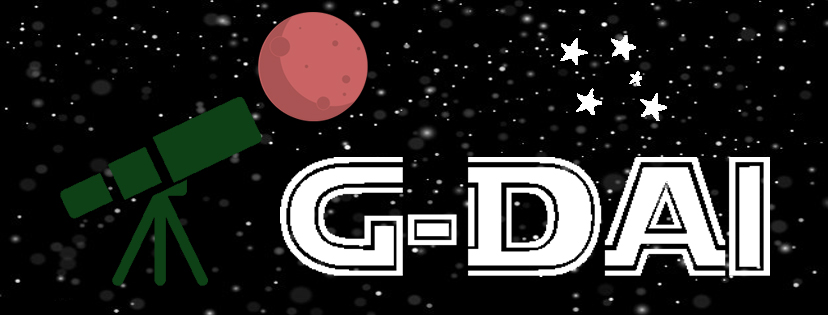

O G-DAI
O G-DAI - Grupo de Divulgação da Astronomia do IFSULDEMINAS foi fundado no dia 18
de dezembro de 2019 por meio de um edital externo do IFSULDEMINAS que permitiu que dois alunos entrassem
como bolsistas do projeto e conta ainda com a participação de dois voluntários, sob orientação do
Professor Rodrigo Ortolan. Desde então, se começou o planejamento das atividades, bem como o estudo
sobre astronomia e astrofísica realizado através de cursos online.
Com objetivo de divulgar a astronomia, o G-DAI realiza ações dentro do campus Poços
de Caldas que são abertas à comunidade, e também externamente como em escolas, instituições e praças.
Segue algumas da ações desenvolvidas:
- Seção Astronomia: Apresentação de palestras semanais no campus (e eventuais em instituições)
com ensinamentos dos mais variados temas na área de astronomia com linguagem acessível ao
público não especializado.
- Observação do céu noturno: Sessões de observação do céu noturno utilizando telescópios, além
de visualização a olho nu reconhecendo constelações e planetas.
- Modelos didáticos: Construção e apresentação de modelos didáticos para auxiliar no
aprendizado dos conceitos básicos de astronomia.
- Instrumentos astronômicos de baixo custo: Concepção, construção e utilização de
instrumentos astronômicos de baixo custo como lunetas, binóculos e relógio solar utilizando
materiais de fácil acesso.
- Construção de foguetes a ar comprimido: Concepção construção e testes de modelos de foguetes
de ar comprimido e bases de lançamento de foguetes utilizando materiais de fácil acesso
estimulando assim a participação na Mostra Brasileira de Foguetes (MOBFOG).
Além disso, o G-DAI busca fortalecer as atividades do Centro de Divulgação e
Popularização da Ciência (CDPC) do campus Poços de Caldas do IFSULDEMINAS no que se refere à ampla
difusão e disseminação da ciência, bem como no apoio à divulgação e inserção do campus em toda a região.
